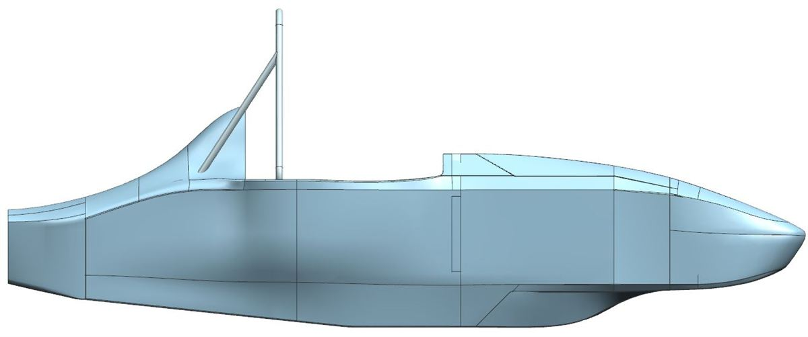

Fully parametric chassis
- Built the chassis as a single parametric model in Siemens NX, driven by a parameter workbook, so geometry updates instead of being redrawn.
- Most constraints were self-set: the chassis was modelled around a battery container concept, so its dimensions move with the pack rather than being fixed.
- Encoded two international Formula Student rule sets as constraints, catching compliance issues before drawings were released.
- Diffuser angle came out of STAR-CCM+ design studies, and the diffuser sits deliberately on the pitch axis of the vehicle concept.
- Front hoop dimensions are parametric, and the roll hoop follows the Percy templates and self-imposed values — change the hoop and the chassis rebuilds around it.
- Remodelled the 2025 chassis for system integration simplicity and reduced volume — packaging the inverter and every other necessary device inside the chassis volume, with vehicle dynamics and aerodynamics setting the layout priorities.
- Designed the bodywork around it — nosecone, pedal box cover, rear fairing and splitter — iterated through a few versions and still unfinished.
- Kept the model auditable for the next year's team: parameters documented, not buried in features.
